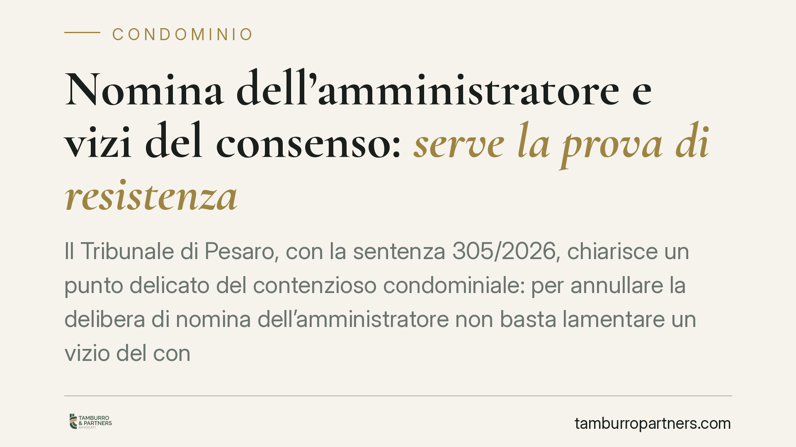

Nomina dell'amministratore e vizi del consenso: serve la prova di resistenza
Il Tribunale di Pesaro, con la sentenza 305/2026, chiarisce un punto delicato del contenzioso condominiale: per annullare la delibera di nomina dell'amministratore non basta lamentare un vizio del consenso. Il condòmino deve dimostrare che i voti viziati sono stati determinanti per raggiungere il quorum. È la cosiddetta prova di resistenza, che sposta sul dissenziente un onere non banale.

Il caso
Un gruppo di condòmini aveva impugnato la delibera assembleare di nomina dell'amministratore, sostenendo che alcuni voti favorevoli fossero stati espressi sulla base di informazioni fuorvianti, dunque affetti da vizio del consenso.
Il Tribunale di Pesaro ha respinto la domanda. Non perché il vizio non fosse teoricamente rilevante, ma perché mancava un passaggio decisivo: la dimostrazione che quei voti, depurati dall'asserito vizio, avrebbero cambiato l'esito della votazione.
Inquadramento normativo
La nomina dell'amministratore è regolata dall'art. 1129 del Codice civile, che disciplina modalità, durata e revoca dell'incarico. La delibera si forma con le maggioranze previste dall'art. 1136 c.c.
Il richiamo all'art. 1435 c.c. attiene invece alla violenza come vizio del consenso nei contratti. La categoria dei vizi del consenso (errore, violenza, dolo) nasce in ambito contrattuale, ma viene talvolta invocata per contestare la validità del voto assembleare, assimilato a una manifestazione di volontà.
Qui sta il nodo. La delibera è un atto collegiale: non è la somma di singole volontà, ma il risultato di un procedimento. Per questo il vizio che colpisce un singolo voto non si trasmette automaticamente all'intera decisione. Occorre verificare se, eliminato quel voto, la maggioranza regge comunque. È la prova di resistenza: un test di causalità tra il vizio lamentato e il risultato della votazione.
Perché la decisione conta
Il principio non è nuovo in materia societaria, dove la prova di resistenza è consolidata. La sentenza di Pesaro ne conferma l'applicazione al condominio, con una conseguenza pratica precisa.
Chi impugna non può limitarsi a segnalare che un voto era viziato. Deve ricostruire l'aritmetica dell'assemblea: quanti millesimi e quante teste rappresentava quel voto, e se la sua esclusione avrebbe fatto venire meno il quorum deliberativo.
Se la maggioranza si sarebbe formata ugualmente, la delibera resta valida. Il vizio diventa irrilevante ai fini dell'annullamento, perché non ha inciso sull'esito.
Implicazioni pratiche
Per il condòmino dissenziente l'onere probatorio si fa concreto e numerico. Non basta la contestazione di principio: serve un calcolo documentato. Chi impugna senza questa verifica rischia una pronuncia di rigetto e la condanna alle spese.
Per l'amministratore e per chi gestisce l'assemblea, la decisione rafforza la stabilità della nomina. Una contestazione generica sul consenso difficilmente travolge l'incarico, se i numeri reggono.
Resta fermo che il principio riguarda l'annullabilità per vizi del consenso. Non copre le ipotesi di nullità della delibera, né i vizi procedurali autonomi (difetti di convocazione, mancanza di verbale, oggetto illecito), che seguono regole proprie e non richiedono necessariamente la prova di resistenza.
Attenzione anche ai termini. L'impugnazione delle delibere annullabili va proposta entro trenta giorni (art. 1137 c.c.), decorrenti dalla delibera per i presenti dissenzienti e dalla comunicazione per gli assenti. La prova di resistenza non sposta questi termini: va comunque rispettato il calendario.
Cosa fare in concreto
- Ricostruite i numeri dell'assemblea prima di impugnare: verbale, millesimi, teste presenti e voti espressi. Senza questo dato la domanda è debole in partenza.
- Isolate il voto contestato e calcolate se la maggioranza regge senza di esso. Se regge, valutate se l'azione ha ancora senso.
- Documentate il vizio del consenso con elementi oggettivi: non è sufficiente l'affermazione, serve prova dell'errore, del dolo o della violenza lamentati.
- Rispettate il termine di trenta giorni per l'impugnazione delle delibere annullabili, distinguendo la decorrenza per presenti e assenti.
- Distinguete nullità e annullabilità: alcuni vizi non richiedono la prova di resistenza e non sono soggetti al termine breve. Consigliamo una verifica preliminare della categoria del vizio.
In sintesi
La sentenza riporta il contenzioso sulla nomina dell'amministratore a un criterio di concretezza. Il vizio del consenso rileva solo se incide davvero sull'esito. Prima di avviare un'azione, conviene fare i conti.
---
*Contributo informativo a cura di Tamburro & Partners - Avv. Giuseppe Tamburro. Non costituisce parere legale.*
Ogni condominio ha una storia a sé.
Se gestisci un'amministrazione e vuoi un confronto su una specifica questione condominiale, scrivi allo studio. Ti rispondiamo entro un giorno lavorativo.